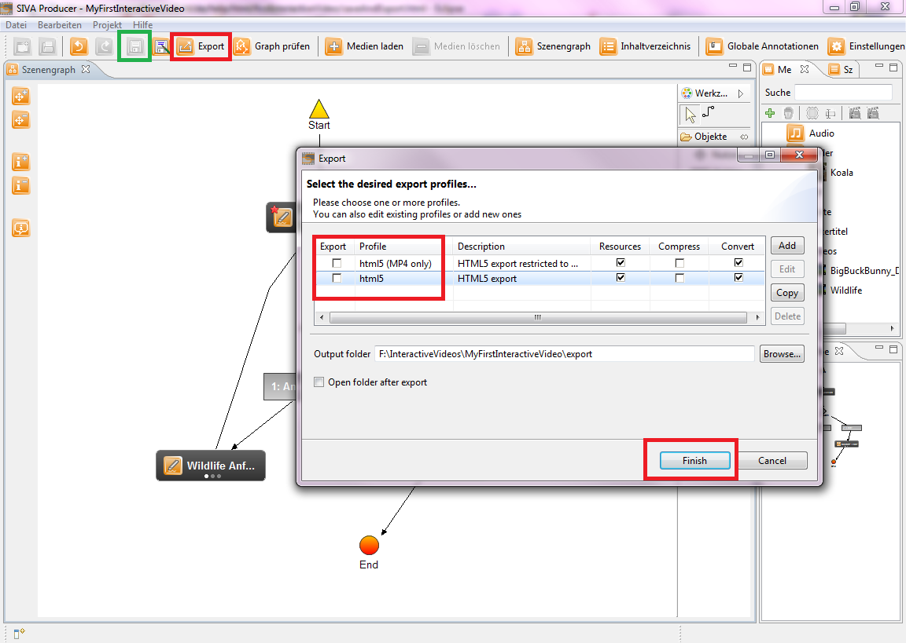
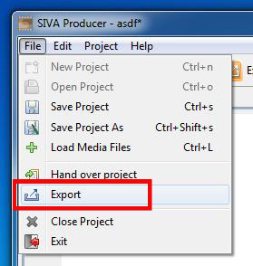
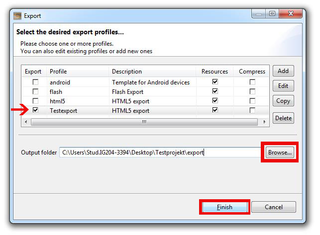

Exportieren eines Videoprojekts
Nun ist Ihr erstes interaktives Video fertig und Sie können es exportieren bzw. speichern.
- Wenn Sie das Video speichern wollen, klicken Sie bitte hierfür auf den Speichern-Button.
Dieser ist im Bild grün umrandet. Speichern eines Projektes bedeutet, dass alle Informationen gespeichert werden,
sodass Sie dieses Projekt im SIVA-Producer wieder öffnen und bearbeiten können.
- Wenn Sie das Video exportieren wollen, klicken Sie bitte hierfür den Export-Button.
Dieser ist im Bild rot umrandet. Exportieren bedeutet, dass alle Informationen in einer Datei gepeichert werden,
sodass Sie das Video in einem Mediaplayer anschauen können.

Wenn Sie auf den Export-Button geklickt haben, öffnet sich ein Fenster, in dem Sie das Profil auswählen können, das
Sie exportieren möchten (z. B. als Audiodatei oder Videodatei).
Darüberhinaus wählen Sie bitte das Zielverzeichnis aus, in dem die Datei gespeichert werden soll.
Klicken Sie anschließend den "Finish"-Button, um den Export in Gang zu setzen.
Export im Detail
- Öffnen Sie das Export-Fenster im Producer unter "Datei" --> "Export" oder durch einen Klick auf den
"Export"-Button in der Funktionsleiste .

- Erstellen eines neuen Profils:
- Um ein neues Profil mit den gleichen Einstellungen wie Ihr angelegtes Projekt zu erstellen klicken Sie einmal
das Export-Profil "html5" an und drücken anschließend den "Copy"-Button.

- Im neu geöffneten Fenster können Sie einen beliebigen Profiltitel vergeben, die restlichen Einstellungen
behalten Sie bei und klicken auf "Next".

- In den folgenden Schritten können sie bei den Audio- sowie Video-Settings weitere Einstellungen abwählen.
- Danach klicken Sie auf "Finish" um das neue Profil zu erstellen.
- Nun können Sie aus den zur Auswahl stehenden Profilen jene auswählen, in denen Sie Ihr Projekt exportiert haben
wollen, indem Sie sie in der Spalte "Export" mit einem Haken auswählen.
- Zuletzt bestimmen Sie bei "Output folder" den Ordner, indem das exportierte Projekt gespeichert werden
soll, und beenden den Export mit einem Klick auf "Finish". Das Projekt wird anschließend exportiert,
ein Fortschrittsbalken erscheint.

Herzlichen Glückwunsch, Sie haben nun Ihr erstes Hypervideo erstellt! Mehr Details können Sie im Bereich Komponenten dieser Hilfe erhalten.